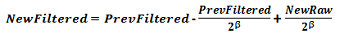
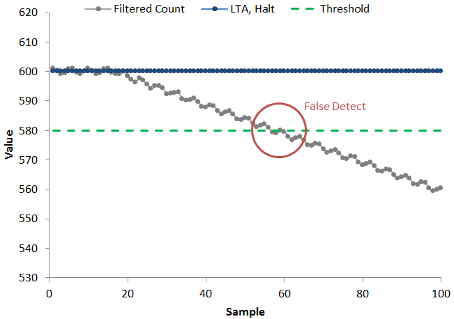
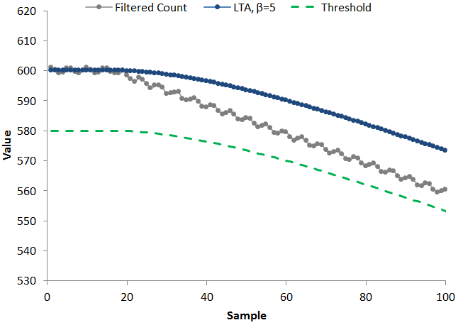

The long-term-average (LTA) filter allows the LTA for each element to compensate for environmental drift. Environmental drift may be caused by physical or electrical changes. Examples of physical changes include temperature, humidity, and the presence of nearby conductors. Examples of electrical changes include operating voltage and power source (battery versus grounded mains power).
The LTA filter is a first-order IIR low-pass filter with 7 adjustable steps to control the filter strength. The LTA filter is enabled by default. To disable it, set the Halt_LTA_Filter_Immediately parameter.
The filter mechanism used to maintain the long term average is identical to that used for the count filter- the difference is the filter strength (corner frequency) that is selected. The LTA filter typically uses a very strong beta (usually the maximum of 7). This is because environmental changes are typically slow when compared to a touch or proximity event. The LTA filter strength is set in the LTA_Filter_Beta parameter.

The example below illustrates how the LTA filter works to adapt to environmental changes. Consider the data set below, where the filtered count slowly drifts downward. This could be due to a sudden environment change (moving from a climate-controlled room to an outdoor environment, for example). If the LTA filter is halted (as shown below), the filtered count will eventually dip below the touch threshold, and a false touch will be reported (as shown by the red circle).

This false touch may be avoided through the use of LTA filtering. An assumption is made that environmental changes are slow changes (relative to the speed of a touch). With the LTA filter active, the LTA tracks with the slow environmental change, and a false threshold crossing never occurs.

Implementation Notes
A good starting point for implementing the LTA filter is a beta of 7. This is the strongest filter
available, outside of an LTA halt.
It is also important to note that the filter value used is dependent upon the system scan rate.
For example, a LTA filter beta of 6 at 50 Hz has similar characteristics as one with a
beta of 7 at 100 Hz.
The LTA Control parameters provide the ability to control when the LTA is stopped, or "halted." There are a variety of circumstances where it is necessary to halt an element's long term average. Halting the LTA essentially "locks" the LTA to its current value. When halted, the LTA it is not updated with new conversion results. When an element crosses into a touch or proximity state, the LTA must be halted to prevent the LTA from tracking to the new proximity or touch state. If an element's LTA is not halted during a touch or proximity event, the touch and/or proximity event would be "tracked" out and would be considered the new baseline. By default, the LTA filter is halted automatically when a proximity or touch threshold is crossed for the element. Other halting options are available via the Halt_LTA_On_Sensor_Prox_Or_Touch and Halt_LTA_On_Element_Prox_Or_Touch parameters. If Halt_LTA_On_Element_Prox_Or_Touch is cleared, the LTA will continue to track even if an element is in detect. Setting Halt_LTA_On_Sensor_Prox_Or_Touch will halt the LTA of every element in the sensor if any one of them is in prox or touch detect. Halt_LTA_On_Sensor_Prox_Or_Touch overrides Halt_LTA_On_Element_Prox_Or_Touch.
Affected Software Parameters
The LTA_Filter_Beta parameter corresponds to the
ui8LTABeta
member of the
tSensor
type in the CapTIvate Touch Library.
The Halt_LTA_Filter_Immediately parameter corresponds to the
bSensorHalt
member of the
tSensor
type in the CapTIvate Touch Library.
The Halt_LTA_On_Element_Prox_Or_Touch parameter corresponds to the
bPTElementHalt
member of the
tSensor
type in the CapTIvate Touch Library. This is set by default.
The Halt_LTA_On_Sensor_Prox_Or_Touch parameter corresponds to the
bPTSensorHalt
member of the
tSensor
type in the CapTIvate Touch Library.